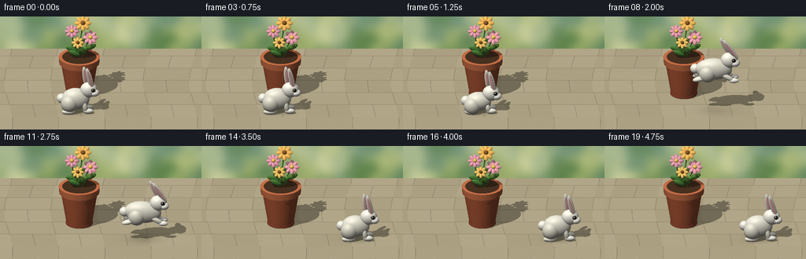
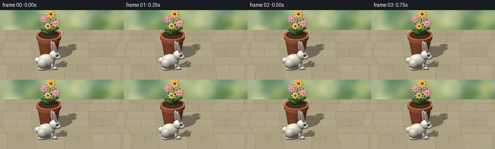

CODING AGENTS AS PIXEL WORLD MODELS
traex/GPT-6.1-Sol · dynamic_spatial_relationship_0021
点击播放 · 原生 RGB 像素
逐轮保存的候选
回放视频、检查图与代码变化。
每份候选均可单独播放。实际图片检查记录在下方工具轨迹中。
候选 01播放与检查图
点击播放 · 原生 RGB 像素


展开代码变化
--- 上一保存版本
+++ 本次保存版本
@@ -0,0 +1,285 @@
+"""A deterministic, purely geometric RGB animation renderer."""
+from pathlib import Path
+import json, math
+import numpy as np
+from PIL import Image, ImageDraw, ImageFilter
+from artifact_io import save
+
+ROOT=Path(__file__).resolve().parent
+SPEC=json.loads((ROOT/'task_spec.json').read_text())
+W,H=SPEC['width'],SPEC['height']; SS=2
+RW,RH=W*SS,H*SS
+rng=np.random.default_rng(27)
+
+# World coordinates: x goes right, y goes away from the viewer, z goes up.
+cam=np.array([0.,-8.,4.6]); target=np.array([0.,0.,.86])
+fwd=(target-cam); fwd/=np.linalg.norm(fwd)
+right=np.array([1.,0.,0.]); up=np.cross(right,fwd); up/=np.linalg.norm(up)
+span=5.45
+xx,yy=np.meshgrid((np.arange(RW)+.5)/RW-.5,.5-(np.arange(RH)+.5)/RH)
+orig=cam+xx.reshape(-1,1)*span*right+yy.reshape(-1,1)*(span*H/W)*up
+N=len(orig)
+light=np.array([-3.5,-4.5,8.]); light/=np.linalg.norm(light)
+
+
+def rot_y(a):
+ c,s=np.cos(a),np.sin(a)
+ return np.array([[c,0,s],[0,1,0],[-s,0,c]])
+
+
+def ell(c,s,color,rotation=None,kind='matte'):
+ return dict(type='ell',c=np.array(c,dtype=float),s=np.array(s,dtype=float),R=np.eye(3) if rotation is None else rotation,col=np.array(color)/255.,kind=kind)
+
+
+def link(a,b,r,color,kind='matte'):
+ a,b=np.array(a),np.array(b); v=b-a; z=v/np.linalg.norm(v)
+ x=np.cross(np.array([0.,1.,0.]),z)
+ if np.linalg.norm(x)<.01: x=np.cross(np.array([1.,0.,0.]),z)
+ x/=np.linalg.norm(x); y=np.cross(z,x)
+ return ell((a+b)/2,[r,r,np.linalg.norm(v)/2+r],color,np.column_stack([x,y,z]),kind)
+
+
+def cone(x,y,z0,z1,r0,r1,color,inner=0):
+ return dict(type='cone',c=np.array([x,y,z0]),z1=z1,r0=r0,r1=r1,inner=inner,col=np.array(color)/255.,kind='clay')
+
+
+def local(v,R):
+ return np.stack([v[:,0]*R[0,j]+v[:,1]*R[1,j]+v[:,2]*R[2,j] for j in range(3)],axis=1)
+
+
+def intersect(o,d,obj,normals=False):
+ if obj['type']=='ell':
+ R=obj['R']; s=obj['s']
+ q=local(o-obj['c'],R)/s
+ if np.ndim(d)==1:
+ v=(d@R)/s
+ A=np.sum(v*v); B=np.sum(q*v,axis=1); C=np.sum(q*q,axis=1)-1
+ else:
+ v=local(d,R)/s; A=np.sum(v*v,axis=1); B=np.sum(q*v,axis=1); C=np.sum(q*q,axis=1)-1
+ disc=B*B-A*C
+ t=(-B-np.sqrt(np.maximum(disc,0)))/A
+ t=np.where((disc>=0)&(t>.001),t,np.inf)
+ if not normals:return t
+ tl=np.where(np.isfinite(t),t,0)
+ p=q+tl[:,None]*v
+ nl=p/s
+ n=nl@R.T; n/=np.maximum(np.linalg.norm(n,axis=1,keepdims=True),1e-9)
+ return t,n
+ c=obj['c']; q=o-c; dz=d[2] if np.ndim(d)==1 else d[:,2]
+ dx=d[0] if np.ndim(d)==1 else d[:,0]; dy=d[1] if np.ndim(d)==1 else d[:,1]
+ ht=obj['z1']-c[2]; k=(obj['r1']-obj['r0'])/ht; r=obj['r0']+k*q[:,2]
+ A=dx*dx+dy*dy-k*k*dz*dz
+ B=q[:,0]*dx+q[:,1]*dy-r*k*dz
+ C=q[:,0]**2+q[:,1]**2-r*r
+ disc=B*B-A*C
+ a=np.where(np.abs(A)<1e-9,1e-9,A)
+ roots=[(-B-np.sqrt(np.maximum(disc,0)))/a,(-B+np.sqrt(np.maximum(disc,0)))/a]
+ t=np.full(len(o),np.inf); normal=np.zeros_like(o)
+ for hit in roots:
+ z=q[:,2]+hit*dz
+ valid=(disc>=0)&(hit>.001)&(z>=0)&(z<=ht)&(hit<t)
+ t=np.where(valid,hit,t)
+ if normals:
+ px=q[:,0]+hit*dx; py=q[:,1]+hit*dy
+ ns=np.stack([px,py,-k*(obj['r0']+k*z)],axis=1)
+ ns/=np.maximum(np.linalg.norm(ns,axis=1,keepdims=True),1e-8)
+ normal[valid]=ns[valid]
+ for z,rad,sign in [(0,obj['r0'],-1),(ht,obj['r1'],1)]:
+ hit=(z-q[:,2])/dz
+ px=q[:,0]+hit*dx; py=q[:,1]+hit*dy
+ rr=px*px+py*py
+ valid=(hit>.001)&(rr<=rad*rad)&(rr>=obj['inner']**2)&(hit<t)
+ t=np.where(valid,hit,t)
+ if normals:normal[valid]=[0,0,sign]
+ return (t,normal) if normals else t
+
+
+# A softly defocused garden painted with deterministic colored bokeh.
+bg=Image.new('RGB',(RW,RH)); ar=np.zeros((RH,RW,3),dtype=np.uint8)
+for y in range(RH):
+ p=y/RH
+ ar[y,:,0]=int(113+48*p); ar[y,:,1]=int(147+23*p); ar[y,:,2]=int(119-14*p)
+bg=Image.fromarray(ar); bd=ImageDraw.Draw(bg,'RGBA')
+for i in range(120):
+ x=float(rng.uniform(-50,RW+50));y=float(rng.uniform(-50,RH*.63));r=float(rng.uniform(8,44))
+ col=[(61,107,67,100),(93,130,74,130),(172,183,108,140),(225,222,169,120)][i%4]
+ bd.ellipse((x-r,y-r,x+r,y+r),fill=col)
+bg=bg.filter(ImageFilter.GaussianBlur(11)); BG=np.asarray(bg).reshape(-1,3)/255.
+
+# Terracotta pot, rim, soil, leaves, and flowering stems.
+px,py=-.58,.48
+static=[cone(px,py,.03,1.03,.345,.51,(179,87,54)),
+ cone(px,py,.94,1.12,.542,.555,(203,107,66),.462),
+ cone(px,py,1.105,1.116,.46,.46,(65,43,27)),
+ cone(px,py,.025,.085,.365,.365,(157,73,48))]
+# Small clay speckles on the sunward front surface.
+for i in range(11):
+ z=rng.uniform(.19,.89); angle=rng.uniform(-2.75,-.55);rad=.345+(z-.03)/1.0*.165
+ static.append(ell([px+rad*np.cos(angle),py+rad*np.sin(angle),z],[.006,.006,.008],(213,126,85)))
+flowers=[(-.20,.0,1.88,.145,(231,147,169)),(.10,.055,2.10,.17,(244,180,80)),(.30,-.015,1.70,.155,(236,154,169)),(-.04,-.15,1.61,.13,(245,193,91))]
+for fi,(fx,fy,z,rad,col) in enumerate(flowers):
+ top=np.array([px+fx,py+fy,z]); base=np.array([px+fx*.25,py+fy*.25,1.08])
+ mid=(base+top)/2+np.array([-.035,0,0])
+ static += [link(base,mid,.019,(66,108,46)),link(mid,top,.016,(73,123,50))]
+ for k,sg in enumerate([-1,1]):
+ lc=base+(top-base)*(.32+k*.20); lc+=np.array([sg*.115,-.02,.025])
+ static.append(ell(lc,[.16,.045,.069],(70+k*12,125+k*8,51),rot_y(-sg*.40)))
+ # Petals form a readable flower disk tilted toward the camera.
+ normal=np.array([.02,-.75,.66]); normal/=np.linalg.norm(normal)
+ ax=np.array([1.,0.,0.]); ay=np.cross(normal,ax)
+ for j in range(8):
+ angle=2*np.pi*j/8
+ v=np.cos(angle)*ax+np.sin(angle)*ay
+ vv=np.cross(normal,v)
+ R=np.column_stack([v,vv,normal])
+ static.append(ell(top+v*rad*.70,[rad*.64,rad*.35,.032],col,R))
+ R=np.column_stack([ax,ay,normal])
+ static.append(ell(top+normal*.035,[rad*.37,rad*.37,.041],(130,80,30) if fi%2 else (243,195,75),R))
+
+
+def rabbit(x,y,h,phase,t):
+ # Flexion and leg extension give the hop a crouch, takeoff, arc, and landing.
+ flying=phase=='flight'; crouch=phase=='crouch'; landing=phase=='land'
+ stretch=.12 if flying else (-.035 if crouch else 0)
+ bodyz=.38+(-.07 if crouch else 0)+h
+ tilt=-.10*np.sin(t*1.6) if flying else 0
+ white=(235,231,213); warm=(225,221,203); lite=(247,244,229)
+ o=[]
+ o.append(ell([x-.10,y,bodyz],[.38+stretch,.245,.305-(.05 if crouch else 0)],white,rot_y(tilt),kind='fur'))
+ o.append(ell([x-.265,y-.11,bodyz-.09],[.235,.218,.245],warm,kind='fur'))
+ o.append(ell([x-.48-stretch,y+.015,bodyz+.005],[.135,.125,.135],lite,kind='fur'))
+ hz=bodyz+.275-(.03 if crouch else 0)
+ hx=x+.255+stretch*.55
+ o.append(ell([hx,y-.015,hz],[.232,.185,.217],lite,rot_y(-.1),kind='fur'))
+ # Two tall, individually posed ears; pink inset lies on the camera-facing face.
+ earangle=-.20-(.34 if flying else 0)+.035*np.sin(t*2.3)
+ for i in range(2):
+ ey=y+(.07 if i==0 else -.083)
+ ex=hx+(-.095 if i==0 else .03)
+ ez=hz+.345
+ rot=rot_y(earangle+(.08 if i==0 else -.04))
+ length=.31 if i==0 else .34
+ o.append(ell([ex,ey,ez],[.074,.055,length],white,rot,kind='fur'))
+ o.append(ell([ex,ey-.047,ez+.009],[.040,.016,length*.77],(213,161,157),rot,kind='ear'))
+ # Cheeks, tiny split muzzle, nose, and a large glossy near-side eye.
+ o.append(ell([hx+.157,y-.075,hz-.060],[.129,.13,.10],lite,kind='fur'))
+ o.append(ell([hx+.249,y-.074,hz-.034],[.036,.041,.028],(195,137,133),kind='nose'))
+ o.append(ell([hx+.111,y-.173,hz+.060],[.071,.024,.072],(207,202,182),kind='fur'))
+ o.append(ell([hx+.12,y-.190,hz+.065],[.049,.026,.052],(26,22,20),kind='eye'))
+ o.append(ell([hx+.106,y-.215,hz+.082],[.013,.008,.013],(255,255,245),kind='shine'))
+ # Visible foreleg and far foreleg, with stretched feet in mid-air.
+ for side in [.105,-.145]:
+ if flying:
+ start=[x+.16,y+side,bodyz-.12]; end=[x+.39,y+side,bodyz-.25]
+ foot=[x+.44,y+side,bodyz-.28]
+ else:
+ start=[x+.14,y+side,bodyz-.10]; end=[x+.17,y+side,.105+h]
+ foot=[x+.245,y+side,.078+h]
+ o.append(link(start,end,.068,white,kind='fur'))
+ o.append(ell(foot,[.139,.073,.069],lite,kind='fur'))
+ for side in [.11,-.17]:
+ foot=[x-.29-(.20 if flying else 0),y+side,(bodyz-.22 if flying else .068+h)]
+ if flying:o.append(link([x-.25,y+side,bodyz-.08],foot,.084,warm,kind='fur'))
+ o.append(ell(foot,[.184,.091,.071],white,rot_y(-.25 if flying else 0),kind='fur'))
+ return o
+
+
+def primary(objects,base=None):
+ if base is None:
+ depth=np.full(N,np.inf); norm=np.zeros((N,3)); color=BG.copy(); kind=np.zeros(N,np.int8)
+ tg=-orig[:,2]/fwd[2]; p=orig+tg[:,None]*fwd
+ floor=(tg>0)&(p[:,1]<3.4)
+ depth[floor]=tg[floor];norm[floor]=[0,0,1]; kind[floor]=1
+ # Warm limestone pavers with narrow irregular mortar lines.
+ u=p[:,0]+.11*np.sin(p[:,1]*1.2);v=p[:,1]
+ row=np.floor((v+.2)/.78); fx=np.mod(u+np.mod(row,2)*.63,1.25);fy=np.mod(v+.2,.78)
+ seam=(fx<.017)|(fy<.017)
+ noise=(np.sin(p[:,0]*130+p[:,1]*117)*np.sin(p[:,0]*75-p[:,1]*80))*.010
+ tile=.016*np.sin(np.floor(u/1.25)*3.1+row*1.3)
+ ground=np.stack([.70+noise+tile,.65+noise+tile,.52+noise+tile],axis=1)
+ ground[seam]*=.82
+ color[floor]=ground[floor]
+ else:
+ depth,norm,color,kind=[v.copy() for v in base]
+ for obj in objects:
+ ts,ns=intersect(orig,fwd,obj,True);mask=ts<depth
+ if not mask.any():continue
+ depth[mask]=ts[mask];norm[mask]=ns[mask];color[mask]=obj['col']
+ kd={'fur':2,'eye':3,'shine':4,'clay':5,'ear':6}.get(obj['kind'],0)
+ kind[mask]=kd
+ return depth,norm,color,kind
+
+
+print('Rendering static geometry...',flush=True)
+base=primary(static)
+# One soft key light plus broad sky fill. A cached static shadow field keeps rendering efficient.
+def shadow(points,objects):
+ blocked=np.zeros(len(points),bool)
+ for obj in objects:
+ # Bounding sphere cheaply excludes most shadow rays.
+ if obj['type']=='ell': center=obj['c']; radius=np.max(obj['s'])
+ else: center=obj['c'].copy(); center[2]=(obj['c'][2]+obj['z1'])/2;radius=np.hypot(obj['r1'],(obj['z1']-obj['c'][2])/2)
+ rel=center-points;along=np.sum(rel*light,axis=1)
+ dist=np.sum(rel*rel,axis=1)-along*along
+ mask=(along>0)&(dist<radius*radius)&(~blocked)
+ if mask.any():
+ ix=np.flatnonzero(mask); hits=intersect(points[ix],light,obj)
+ blocked[ix[np.isfinite(hits)]]=True
+ return blocked
+
+finite=np.isfinite(base[0]); bp=orig[finite]+base[0][finite,None]*fwd+base[1][finite]*.003
+static_shadow=np.zeros(N,bool);static_shadow[finite]=shadow(bp,static)
+
+
+def render(bunny,x,y,height):
+ dep,n,col,kind=primary(bunny,base)
+ hit=np.isfinite(dep); pos=orig[hit]+dep[hit,None]*fwd
+ nn=n[hit]; cc=col[hit];kd=kind[hit]
+ is_bunny=dep[hit]<base[0][hit]-1e-5
+ p=pos+nn*.004
+ shade=static_shadow[hit].copy()
+ shade[is_bunny]=shadow(p[is_bunny],static)
+ shade |= shadow(p,bunny)
+ diffuse=np.clip(nn@light,0,1)
+ hemi=.78+.22*np.clip(nn[:,2],-1,1)
+ lighting=.43*hemi+.62*diffuse*np.where(shade,.28,1.)
+ # Soft rabbit contact shadow, widening and fading with the leap.
+ floor=kd==1
+ dd=((pos[:,0]-(x-.07))/(.45+height*.2))**2+((pos[:,1]-y)/(.30+height*.15))**2
+ ao=1-.25*np.exp(-dd*1.8)*np.exp(-height*1.2)
+ lighting[floor]*=ao[floor]
+ # Ground contact and curved underside occlusion add weight.
+ lighting*=1-.10*np.exp(-np.maximum(pos[:,2],0)*7)*(~floor)
+ tex=np.ones(len(pos))
+ fur=kd==2
+ tex[fur]=1+.019*np.sin(pos[fur,0]*310+pos[fur,2]*175)*np.sin(pos[fur,1]*250-pos[fur,2]*280)
+ clay=kd==5
+ tex[clay]=1+.021*np.sin(pos[clay,0]*180+pos[clay,2]*290)*np.sin(pos[clay,1]*237)
+ halfv=light-fwd;halfv/=np.linalg.norm(halfv)
+ spec=np.clip(nn@halfv,0,1)**32*.095
+ spec[kd==3]=np.clip(nn[kd==3]@halfv,0,1)**65*.85
+ lit=cc*lighting[:,None]*tex[:,None]+spec[:,None]*np.array([1.,.93,.81])
+ lit[kd==4]=[1,1,.98]
+ # A subtle warm filmic lift, not oversaturated plastic colors.
+ lit=np.clip(lit,0,1)**.90
+ result=BG.copy();result[hit]=lit
+ arr=np.clip(result.reshape(RH,RW,3)*255,0,255).astype(np.uint8)
+ return np.asarray(Image.fromarray(arr).resize((W,H),Image.Resampling.LANCZOS))
+
+frames=[]
+for i in range(SPEC['frames']):
+ t=i/SPEC['fps']; y=-.62; h=0; x=-.58; phase='rest'
+ if i==5:phase='crouch'
+ elif 6<=i<=11:
+ phase='flight'; u=(i-5)/7
+ x=-.58+2.12*u; y=-.62+.14*u
+ h=.88*4*u*(1-u)
+ elif i>=12:
+ x=1.54;y=-.48;phase='land' if i==12 else 'rest'
+ if i==12:h=-.028
+ elif i==13:h=-.008
+ bunny=rabbit(x,y,h,phase,t)
+ frames.append(render(bunny,x,y,h))
+ print(f'Frame {i+1}/{SPEC["frames"]}',flush=True)
+save(np.asarray(frames,dtype=np.uint8),ROOT)
+print('Saved RGB frames and player.',flush=True)
可观测工具轨迹
实际执行的命令与返回图片。
命令 1exit 0
/bin/bash -lc "ls -la && cat prompt.txt && printf '\\n---RULES---\\n' && cat GENERATION_RULES.md && printf '\\n---SPEC---\\n' && cat task_spec.json"
命令 2exit 0
/bin/bash -lc "cat artifact_io.py && python - <<'PY'
import PIL, numpy
print('PIL',PIL.__version__)
PY"命令 3exit 0
/bin/bash -lc "cat > generate.py <<'PY'
\"\"\"A deterministic, purely geometric RGB animation renderer.\"\"\"
from pathlib import Path
import json, math
import numpy as np
from PIL import Image, ImageDraw, ImageFilter
from artifact_io import save
ROOT=Path(__file__).resolve().parent
SPEC=json.loads((ROOT/'task_spec.json').read_text())
W,H=SPEC['width'],SPEC['height']; SS=2
RW,RH=W*SS,H*SS
rng=np.random.default_rng(27)
# World coordinates: x goes right, y goes away from the viewer, z goes up.
cam=np.array([0.,-8.,4.6]); target=np.array([0.,0.,.86])
fwd=(target-cam); fwd/=np.linalg.norm(fwd)
right=np.array([1.,0.,0.]); up=np.cross(right,fwd); up/=np.linalg.norm(up)
span=5.45
xx,yy=np.meshgrid((np.arange(RW)+.5)/RW-.5,.5-(np.arange(RH)+.5)/RH)
orig=cam+xx.reshape(-1,1)*span*right+yy.reshape(-1,1)*(span*H/W)*up
N=len(orig)
light=np.array([-3.5,-4.5,8.]); light/=np.linalg.norm(light)
def rot_y(a):
c,s=np.cos(a),np.sin(a)
return np.array([[c,0,s],[0,1,0],[-s,0,c]])
def ell(c,s,color,rotation=None,kind='matte'):
return dict(type='ell',c=np.array(c,dtype=float),s=np.array(s,dtype=float),R=np.eye(3) if rotation is None else rotation,col=np.array(color)/255.,kind=kind)
def link(a,b,r,color,kind='matte'):
a,b=np.array(a),np.array(b); v=b-a; z=v/np.linalg.norm(v)
x=np.cross(np.array([0.,1.,0.]),z)
if np.linalg.norm(x)<.01: x=np.cross(np.array([1.,0.,0.]),z)
x/=np.linalg.norm(x); y=np.cross(z,x)
return ell((a+b)/2,[r,r,np.linalg.norm(v)/2+r],color,np.column_stack([x,y,z]),kind)
def cone(x,y,z0,z1,r0,r1,color,inner=0):
return dict(type='cone',c=np.array([x,y,z0]),z1=z1,r0=r0,r1=r1,inner=inner,col=np.array(color)/255.,kind='clay')
def local(v,R):
return np.stack([v[:,0]*R[0,j]+v[:,1]*R[1,j]+v[:,2]*R[2,j] for j in range(3)],axis=1)
def intersect(o,d,obj,normals=False):
if obj['type']=='ell':
R=obj['R']; s=obj['s']
q=local(o-obj['c'],R)/s
if np.ndim(d)==1:
v=(d@R)/s
A=np.sum(v*v); B=np.sum(q*v,axis=1); C=np.sum(q*q,axis=1)-1
else:
v=local(d,R)/s; A=np.sum(v*v,axis=1); B=np.sum(q*v,axis=1); C=np.sum(q*q,axis=1)-1
disc=B*B-A*C
t=(-B-np.sqrt(np.maximum(disc,0)))/A
t=np.where((disc>=0)&(t>.001),t,np.inf)
if not normals:return t
tl=np.where(np.isfinite(t),t,0)
p=q+tl[:,None]*v
nl=p/s
n=nl@R.T; n/=np.maximum(np.linalg.norm(n,axis=1,keepdims=True),1e-9)
return t,n
c=obj['c']; q=o-c; dz=d[2] if np.ndim(d)==1 else d[:,2]
dx=d[0] if np.ndim(d)==1 else d[:,0]; dy=d[1] if np.ndim(d)==1 else d[:,1]
ht=obj['z1']-c[2]; k=(obj['r1']-obj['r0'])/ht; r=obj['r0']+k*q[:,2]
A=dx*dx+dy*dy-k*k*dz*dz
B=q[:,0]*dx+q[:,1]*dy-r*k*dz
C=q[:,0]**2+q[:,1]**2-r*r
disc=B*B-A*C
a=np.where(np.abs(A)<1e-9,1e-9,A)
roots=[(-B-np.sqrt(np.maximum(disc,0)))/a,(-B+np.sqrt(np.maximum(disc,0)))/a]
t=np.full(len(o),np.inf); normal=np.zeros_like(o)
for hit in roots:
z=q[:,2]+hit*dz
valid=(disc>=0)&(hit>.001)&(z>=0)&(z<=ht)&(hit<t)
t=np.where(valid,hit,t)
if normals:
px=q[:,0]+hit*dx; py=q[:,1]+hit*dy
ns=np.stack([px,py,-k*(obj['r0']+k*z)],axis=1)
ns/=np.maximum(np.linalg.norm(ns,axis=1,keepdims=True),1e-8)
normal[valid]=ns[valid]
for z,rad,sign in [(0,obj['r0'],-1),(ht,obj['r1'],1)]:
hit=(z-q[:,2])/dz
px=q[:,0]+hit*dx; py=q[:,1]+hit*dy
rr=px*px+py*py
valid=(hit>.001)&(rr<=rad*rad)&(rr>=obj['inner']**2)&(hit<t)
t=np.where(valid,hit,t)
if normals:normal[valid]=[0,0,sign]
return (t,normal) if normals else t
# A softly defocused garden painted with deterministic colored bokeh.
bg=Image.new('RGB',(RW,RH)); ar=np.zeros((RH,RW,3),dtype=np.uint8)
for y in range(RH):
p=y/RH
ar[y,:,0]=int(113+48*p); ar[y,:,1]=int(147+23*p); ar[y,:,2]=int(119-14*p)
bg=Image.fromarray(ar); bd=ImageDraw.Draw(bg,'RGBA')
for i in range(120):
x=float(rng.uniform(-50,RW+50));y=float(rng.uniform(-50,RH*.63));r=float(rng.uniform(8,44))
col=[(61,107,67,100),(93,130,74,130),(172,183,108,140),(225,222,169,120)][i%4]
bd.ellipse((x-r,y-r,x+r,y+r),fill=col)
bg=bg.filter(ImageFilter.GaussianBlur(11)); BG=np.asarray(bg).reshape(-1,3)/255.
# Terracotta pot, rim, soil, leaves, and flowering stems.
px,py=-.58,.48
static=[cone(px,py,.03,1.03,.345,.51,(179,87,54)),
cone(px,py,.94,1.12,.542,.555,(203,107,66),.462),
cone(px,py,1.105,1.116,.46,.46,(65,43,27)),
cone(px,py,.025,.085,.365,.365,(157,73,48))]
# Small clay speckles on the sunward front surface.
for i in range(11):
z=rng.uniform(.19,.89); angle=rng.uniform(-2.75,-.55);rad=.345+(z-.03)/1.0*.165
static.append(ell([px+rad*np.cos(angle),py+rad*np.sin(angle),z],[.006,.006,.008],(213,126,85)))
flowers=[(-.20,.0,1.88,.145,(231,147,169)),(.10,.055,2.10,.17,(244,180,80)),(.30,-.015,1.70,.155,(236,154,169)),(-.04,-.15,1.61,.13,(245,193,91))]
for fi,(fx,fy,z,rad,col) in enumerate(flowers):
top=np.array([px+fx,py+fy,z]); base=np.array([px+fx*.25,py+fy*.25,1.08])
mid=(base+top)/2+np.array([-.035,0,0])
static += [link(base,mid,.019,(66,108,46)),link(mid,top,.016,(73,123,50))]
for k,sg in enumerate([-1,1]):
lc=base+(top-base)*(.32+k*.20); lc+=np.array([sg*.115,-.02,.025])
static.append(ell(lc,[.16,.045,.069],(70+k*12,125+k*8,51),rot_y(-sg*.40)))
# Petals form a readable flower disk tilted toward the camera.
normal=np.array([.02,-.75,.66]); normal/=np.linalg.norm(normal)
ax=np.array([1.,0.,0.]); ay=np.cross(normal,ax)
for j in range(8):
angle=2*np.pi*j/8
v=np.cos(angle)*ax+np.sin(angle)*ay
vv=np.cross(normal,v)
R=np.column_stack([v,vv,normal])
static.append(ell(top+v*rad*.70,[rad*.64,rad*.35,.032],col,R))
R=np.column_stack([ax,ay,normal])
static.append(ell(top+normal*.035,[rad*.37,rad*.37,.041],(130,80,30) if fi%2 else (243,195,75),R))
def rabbit(x,y,h,phase,t):
# Flexion and leg extension give the hop a crouch, takeoff, arc, and landing.
flying=phase=='flight'; crouch=phase=='crouch'; landing=phase=='land'
stretch=.12 if flying else (-.035 if crouch else 0)
bodyz=.38+(-.07 if crouch else 0)+h
tilt=-.10*np.sin(t*1.6) if flying else 0
white=(235,231,213); warm=(225,221,203); lite=(247,244,229)
o=[]
o.append(ell([x-.10,y,bodyz],[.38+stretch,.245,.305-(.05 if crouch else 0)],white,rot_y(tilt),kind='fur'))
o.append(ell([x-.265,y-.11,bodyz-.09],[.235,.218,.245],warm,kind='fur'))
o.append(ell([x-.48-stretch,y+.015,bodyz+.005],[.135,.125,.135],lite,kind='fur'))
hz=bodyz+.275-(.03 if crouch else 0)
hx=x+.255+stretch*.55
o.append(ell([hx,y-.015,hz],[.232,.185,.217],lite,rot_y(-.1),kind='fur'))
# Two tall, individually posed ears; pink inset lies on the camera-facing face.
earangle=-.20-(.34 if flying else 0)+.035*np.sin(t*2.3)
for i in range(2):
ey=y+(.07 if i==0 else -.083)
ex=hx+(-.095 if i==0 else .03)
ez=hz+.345
rot=rot_y(earangle+(.08 if i==0 else -.04))
length=.31 if i==0 else .34
o.append(ell([ex,ey,ez],[.074,.055,length],white,rot,kind='fur'))
o.append(ell([ex,ey-.047,ez+.009],[.040,.016,length*.77],(213,161,157),rot,kind='ear'))
# Cheeks, tiny split muzzle, nose, and a large glossy near-side eye.
o.append(ell([hx+.157,y-.075,hz-.060],[.129,.13,.10],lite,kind='fur'))
o.append(ell([hx+.249,y-.074,hz-.034],[.036,.041,.028],(195,137,133),kind='nose'))
o.append(ell([hx+.111,y-.173,hz+.060],[.071,.024,.072],(207,202,182),kind='fur'))
o.append(ell([hx+.12,y-.190,hz+.065],[.049,.026,.052],(26,22,20),kind='eye'))
o.append(ell([hx+.106,y-.215,hz+.082],[.013,.008,.013],(255,255,245),kind='shine'))
# Visible foreleg and far foreleg, with stretched feet in mid-air.
for side in [.105,-.145]:
if flying:
start=[x+.16,y+side,bodyz-.12]; end=[x+.39,y+side,bodyz-.25]
foot=[x+.44,y+side,bodyz-.28]
else:
start=[x+.14,y+side,bodyz-.10]; end=[x+.17,y+side,.105+h]
foot=[x+.245,y+side,.078+h]
o.append(link(start,end,.068,white,kind='fur'))
o.append(ell(foot,[.139,.073,.069],lite,kind='fur'))
for side in [.11,-.17]:
foot=[x-.29-(.20 if flying else 0),y+side,(bodyz-.22 if flying else .068+h)]
if flying:o.append(link([x-.25,y+side,bodyz-.08],foot,.084,warm,kind='fur'))
o.append(ell(foot,[.184,.091,.071],white,rot_y(-.25 if flying else 0),kind='fur'))
return o
def primary(objects,base=None):
if base is None:
depth=np.full(N,np.inf); norm=np.zeros((N,3)); color=BG.copy(); kind=np.zeros(N,np.int8)
tg=-orig[:,2]/fwd[2]; p=orig+tg[:,None]*fwd
floor=(tg>0)&(p[:,1]<3.4)
depth[floor]=tg[floor];norm[floor]=[0,0,1]; kind[floor]=1
# Warm limestone pavers with narrow irregular mortar lines.
u=p[:,0]+.11*np.sin(p[:,1]*1.2);v=p[:,1]
row=np.floor((v+.2)/.78); fx=np.mod(u+np.mod(row,2)*.63,1.25);fy=np.mod(v+.2,.78)
seam=(fx<.017)|(fy<.017)
noise=(np.sin(p[:,0]*130+p[:,1]*117)*np.sin(p[:,0]*75-p[:,1]*80))*.010
tile=.016*np.sin(np.floor(u/1.25)*3.1+row*1.3)
ground=np.stack([.70+noise+tile,.65+noise+tile,.52+noise+tile],axis=1)
ground[seam]*=.82
color[floor]=ground[floor]
else:
depth,norm,color,kind=[v.copy() for v in base]
for obj in objects:
ts,ns=intersect(orig,fwd,obj,True);mask=ts<depth
if not mask.any():continue
depth[mask]=ts[mask];norm[mask]=ns[mask];color[mask]=obj['col']
kd={'fur':2,'eye':3,'shine':4,'clay':5,'ear':6}.get(obj['kind'],0)
kind[mask]=kd
return depth,norm,color,kind
print('Rendering static geometry...',flush=True)
base=primary(static)
# One soft key light plus broad sky fill. A cached static shadow field keeps rendering efficient.
def shadow(points,objects):
blocked=np.zeros(len(points),bool)
for obj in objects:
# Bounding sphere cheaply excludes most shadow rays.
if obj['type']=='ell': center=obj['c']; radius=np.max(obj['s'])
else: center=obj['c'].copy(); center[2]=(obj['c'][2]+obj['z1'])/2;radius=np.hypot(obj['r1'],(obj['z1']-obj['c'][2])/2)
rel=center-points;along=np.sum(rel*light,axis=1)
dist=np.sum(rel*rel,axis=1)-along*along
mask=(along>0)&(dist<radius*radius)&(~blocked)
if mask.any():
ix=np.flatnonzero(mask); hits=intersect(points[ix],light,obj)
blocked[ix[np.isfinite(hits)]]=True
return blocked
finite=np.isfinite(base[0]); bp=orig[finite]+base[0][finite,None]*fwd+base[1][finite]*.003
static_shadow=np.zeros(N,bool);static_shadow[finite]=shadow(bp,static)
def render(bunny,x,y,height):
dep,n,col,kind=primary(bunny,base)
hit=np.isfinite(dep); pos=orig[hit]+dep[hit,None]*fwd
nn=n[hit]; cc=col[hit];kd=kind[hit]
is_bunny=dep[hit]<base[0][hit]-1e-5
p=pos+nn*.004
shade=static_shadow[hit].copy()
shade[is_bunny]=shadow(p[is_bunny],static)
shade |= shadow(p,bunny)
diffuse=np.clip(nn@light,0,1)
hemi=.78+.22*np.clip(nn[:,2],-1,1)
lighting=.43*hemi+.62*diffuse*np.where(shade,.28,1.)
# Soft rabbit contact shadow, widening and fading with the leap.
floor=kd==1
dd=((pos[:,0]-(x-.07))/(.45+height*.2))**2+((pos[:,1]-y)/(.30+height*.15))**2
ao=1-.25*np.exp(-dd*1.8)*np.exp(-height*1.2)
lighting[floor]*=ao[floor]
# Ground contact and curved underside occlusion add weight.
lighting*=1-.10*np.exp(-np.maximum(pos[:,2],0)*7)*(~floor)
tex=np.ones(len(pos))
fur=kd==2
tex[fur]=1+.019*np.sin(pos[fur,0]*310+pos[fur,2]*175)*np.sin(pos[fur,1]*250-pos[fur,2]*280)
clay=kd==5
tex[clay]=1+.021*np.sin(pos[clay,0]*180+pos[clay,2]*290)*np.sin(pos[clay,1]*237)
halfv=light-fwd;halfv/=np.linalg.norm(halfv)
spec=np.clip(nn@halfv,0,1)**32*.095
spec[kd==3]=np.clip(nn[kd==3]@halfv,0,1)**65*.85
lit=cc*lighting[:,None]*tex[:,None]+spec[:,None]*np.array([1.,.93,.81])
lit[kd==4]=[1,1,.98]
# A subtle warm filmic lift, not oversaturated plastic colors.
lit=np.clip(lit,0,1)**.90
result=BG.copy();result[hit]=lit
arr=np.clip(result.reshape(RH,RW,3)*255,0,255).astype(np.uint8)
return np.asarray(Image.fromarray(arr).resize((W,H),Image.Resampling.LANCZOS))
frames=[]
for i in range(SPEC['frames']):
t=i/SPEC['fps']; y=-.62; h=0; x=-.58; phase='rest'
if i==5:phase='crouch'
elif 6<=i<=11:
phase='flight'; u=(i-5)/7
x=-.58+2.12*u; y=-.62+.14*u
h=.88*4*u*(1-u)
elif i>=12:
x=1.54;y=-.48;phase='land' if i==12 else 'rest'
if i==12:h=-.028
elif i==13:h=-.008
bunny=rabbit(x,y,h,phase,t)
frames.append(render(bunny,x,y,h))
print(f'Frame {i+1}/{SPEC[\"frames\"]}',flush=True)
save(np.asarray(frames,dtype=np.uint8),ROOT)
print('Saved RGB frames and player.',flush=True)
PY
OPENBLAS_NUM_THREADS=1 python generate.py"命令 4exit 0
/bin/bash -lc "python - <<'PY'
from pathlib import Path
import numpy as np
from PIL import Image
p=Path('.')
a=np.load('pixels.npz')['pixels']
assert a.shape==(144,256,20)
assert len(list((p/'frames').glob('*.png')))==20
for n in [0,8,19]:
im=np.asarray(Image.open(p/'frames'/f'{n:02d}.png'))
assert im.shape==(144,256,3)
print('Validated: 20 RGB frames at 256Ã144, 4 fps; player and packed video exist.')
PY
command -v ffmpeg || true"保存候选 1 份；完成命令 4 次；可验证图片返回 0 张。原始 API 响应与完整日志保留在本地。